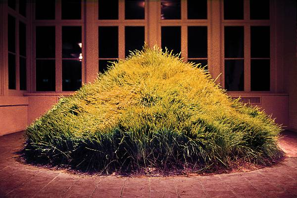

<!DOCTYPE html>
<html lang="en">
<head>
    <script src="myscript.js"></script>
    <link rel="stylesheet" href="styles.css"></html>
    <meta charset="UTF-8">
    <meta http-equiv="X-UA-Compatible" content="IE=edge">
    <meta name="viewport" content="width=device-width, initial-scale=1.0">
    <title>Document</title>
</head>
<body>
    <a href="index.html">
        
    </a>
    <nav>
        <ul class="tabs">
            <a class="linkButton "href="index.html">Home</a>
            <a class="linkButton "href="dance.html">Dance</a>
            <a class="linkButton "href="music.html">Music</a>
            <a class="linkButton "href="earthwork.html">Earthwork</a>
            <a class="linkButton "href="performanceArt.html">Performance Art</a>
            <a class="linkButton "href="scratch.html">Interactive Art</a>
        </ul>
    </nav>
    <!--600 × 400-->
    <div id="waveText" class="generalText">
        
        <b>Hans Haacke, Grass Grows, 1967-69</b>
        <br>
        <br>
        This pile of dirt may not seem significant, but the fact that it's found indoors and surrounded by carefully constructed floors and windows is what makes it stand out. This piece of nature in the context of its surroundings I believe represents humanity's efforts to synthesize nature for its convenience. This is furthered by the fact there's intense spotlights surrounding it, representing how we've captured nature and put it on display merely for our enjoyment. While this can make us more appreciative of it, it can also distract us from real nature and the reality that we're destroying it. Therefore, I believe its important for nature exhibits to be simultaneously visually pleasing while educating people on the necessity of preserving actual nature inside and outside of our cities.
    </div>
</body>
</html>